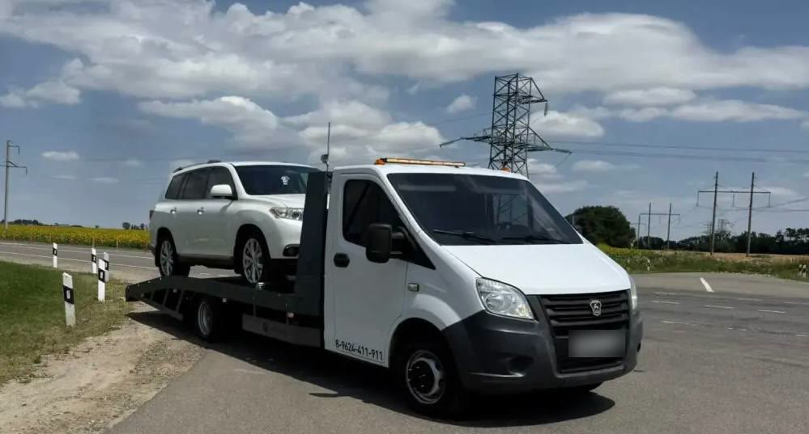

Эвакуатор 911+7 962 441-19-11
1Кнопка WhatsApp в шапке
На телефоне рядом с номером круглая кнопка WhatsApp.
можно сразу27 идей по разделам. Пиши номера, которые делаем.
На телефоне рядом с номером круглая кнопка WhatsApp.
можно сразуОсвобождает место на телефоне, но возвращается при движении вверх.
можно сразуВы сейчас в разделе «Рейсы»: пункт подчёркнут синим.
Сразу понятно, где ты на странице.
можно сразу«Свободен сейчас» может оказаться неправдой. «На линии 24/7» — всегда правда.
можно сразуНужен эвакуатор, я здесь:
yandex.ru/maps/?pt=41.97,45.04
Вижу вас. Будем через 20 минут
Сайт берёт геолокацию и открывает WhatsApp с готовой ссылкой на карту.
можно сразу


10–15 кадров с правильных ракурсов. Самое сильное улучшение сайта. Дам список.
нужны данныеЗдравствуйте! После ДТП, нужен эвакуатор
Где вы находитесь?
Диспетчер сразу видит, что случилось.
можно сразуСиним отмечены новые кнопки.
Перегон купленной машины, шиномонтаж, техосмотр, мото.
можно сразуЧто случилось?
Листаются пальцем вбок, а не занимают три ряда.
можно сразуВодитель, Telegram
Kia Rio, Михайловск → СТО
Михайловск → СТОKia Rio, ноябрьВодитель кидает фото и строку, раз в неделю обновляем сайт.
нужны данные
Трасса → Ставрополь64 км / 1 ч 10 / 14:05Если точных данных нет, оставляем фото, маршрут и месяц.
можно сразуЛюди боятся за машину. Фото креплений снимает страх.
нужны данныеСилуэты с подписями. Сразу понятно, повезут ли твоё.
можно сразу[Имя] ★★★★★
Текст настоящего отзыва подтянется сам из карточки.
Официальный виджет: настоящие отзывы, обновляются сами.
нужны данныеЭвакуатор 911
Спасибо, что выбрали нас! Будем рады отзыву, это 30 секунд:
★ Оставить отзыв на Яндекс Картах
Водитель отправляет шаблон. Через месяц будут десятки отзывов.
нужны данныеevakuator911.ru › mikhaylovsk
Эвакуатор в Михайловске 24/7, от 3 500 ₽
Подача около 30 минут. Платформа 5,9 м…
«Эвакуатор Михайловск», «Невинномысск», «Изобильный». Бесплатные клиенты из поиска.
можно сразу| Село | Подача |
|---|---|
| Михайловск | ~30 мин |
| Надежда | ~30 мин |
| Татарка | ~35 мин |
| Грачёвка | ~60 мин |
Цифры заполнить с водителем.
Честно по каждому селу.
нужны данныеТоп-5 вопросов, которые задают диспетчеру по телефону.
Спросить у диспетчера, что спрашивают чаще всего.
нужны данныеevakuator911.ru
Эвакуатор в Ставрополе 24/7, от 3 500 ₽
Ночью дороже? ⌄
Какие документы нужны? ⌄
Как оплатить? ⌄
Специальная разметка: ответы показываются под ссылкой в Яндексе и Google.
можно сразуСохранил заранее, и в беде номер уже под рукой.
можно сразуРеклама: чужая компания
Эвакуатор 911★★★★★ отзывы, фото
Вместо адреса с чужой рекламой — своя карточка с отзывами.
нужны данныеЗавести адрес вида @evakuator911 вместо номера.
нужны данные200–800 ₽ в год.
Солиднее и запоминается.
нужны данныеНажатия за неделю пример
Видно, сколько звонков приносит сайт. Будет что показать заказчику.
можно сразуВот эвакуатор, звони
Эвакуатор в Ставрополе 24/7От 3 500 ₽. Подача ~20 минутevakuator911.ruПри отправке в WhatsApp и Telegram видна картинка, название и цена, а во вкладке иконка.
можно сразуНа трассе со слабой связью сайт откроется в 3–4 раза быстрее.
Тот же вид, меньше вес.
можно сразуГлавный источник звонков для эвакуатора. Ссылка ведёт на сайт.
нужны данные